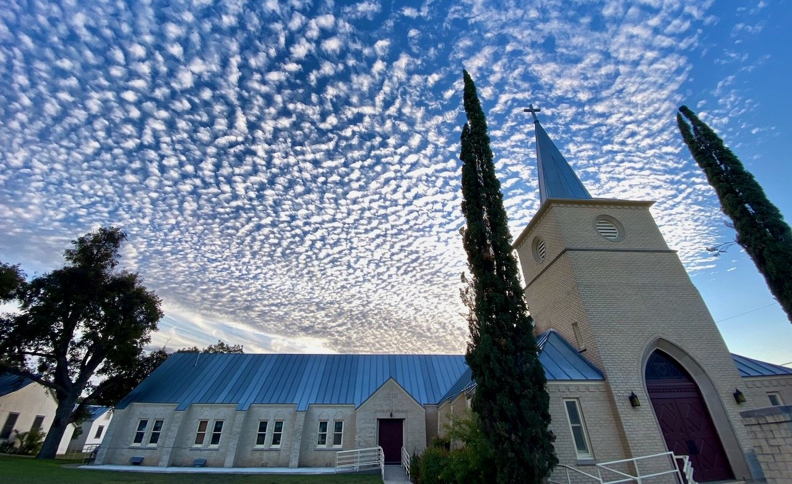

Upcoming
Advent & Christmas 2026
Wednesday Advent services Dec 2, 9 and 16: soup at 6 pm, worship at 7 pm. Christmas Eve service Dec 24 at 5 pm.

Castroville, Texas · Worshiping together since 1852
Sunday worship 10 am with Holy Communion
Upcoming
Wednesday Advent services Dec 2, 9 and 16: soup at 6 pm, worship at 7 pm. Christmas Eve service Dec 24 at 5 pm.
Every October
Zion's biggest day of the year: worship at 10 am, then a German-style Ham Dinner. Our Rummage Sale is open through September up to the Ham Dinner.
175 years
Zion was organized January 29, 1852, and celebrates its 175th anniversary on January 29, 2027.
Zion is calling a new pastor. Interested candidates can write to jobs@zion-castroville.org.